蚂蚁大战臭蜜蜂
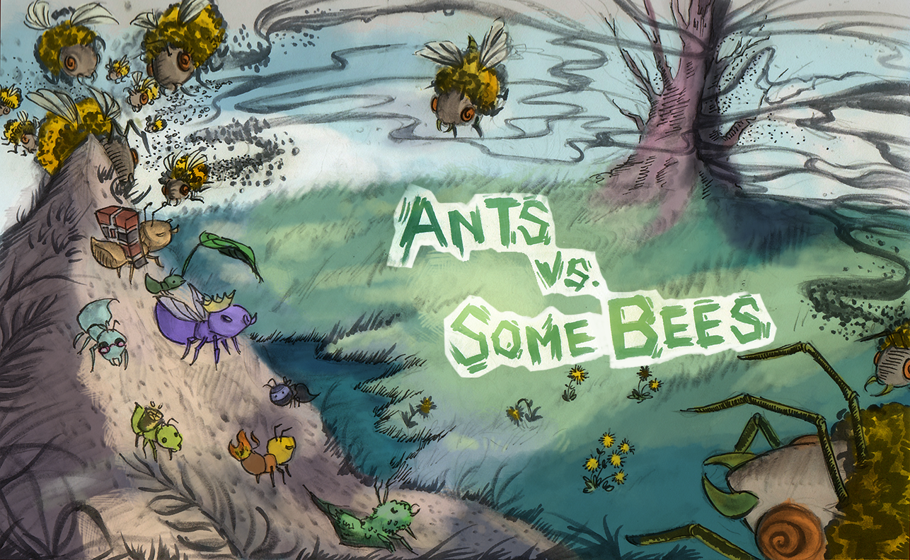
蜜蜂来袭！
打造更强的战士
用继承蚂蚁。
简介
要获得满分：
- 在 07/23（周四） 前提交阶段 1 和阶段 2 都完成的项目。
- 在 07/28（周二） 前提交所有阶段都完成的项目。
请按顺序解题，因为后面的部分会依赖于前面的部分。
整个项目都可以与一位伙伴合作完成。
如果你能在 07/27（周一） 前提交整个项目，可以获得 1 分附加分。
在这个项目中，你将创建一个名为“蚂蚁大战臭蜜蜂”的 塔防 游戏。你要召集蚁群中最勇敢的蚂蚁来抵御入侵领地的邪恶蜜蜂。用树叶不断地骚扰蜜蜂，它们就会被消灭。如果没能充分地困扰这些空中入侵者，你的蚁后就会倒在蜜蜂的愤怒之下。这个游戏灵感来自 PopCap Games 的 植物大战僵尸。
本项目采用面向对象编程范式，重点涉及 第 2.5 章 的内容。这个项目还需要你理解、扩展并测试一个大型程序。
下载起始文件
ants.zip 压缩包中包含多个文件，但你所有的修改都只需在 ants.py 中进行。
ants.py：蚂蚁大战臭蜜蜂的游戏逻辑ants_plans.py：每个难度等级的细节ucb.py：工具函数gui.py:蚂蚁大战臭蜜蜂的图形用户界面（GUI）。ok：自动评分器proj3.ok：ok的配置文件tests：ok使用的测试目录libs：gui.py使用的库目录static：gui.py使用的图片和文件目录templates：gui.py使用的 HTML 模板目录
后勤事项
本项目共 20 分。
在 07/27（周一） 前提交整个项目，可以获得 1 分附加分。
你需要提交以下文件：
ants.py
你无需修改或提交其他任何文件来完成项目。要提交项目，请将所需文件提交到对应的 Gradescope 作业。
你不得使用人工智能工具来完成本项目，也不得参考在互联网上找到的题解。
对于我们要求你实现的函数，我们可能会提供一些初始代码。如果你不想使用这些代码，可以随意删除并从头开始。你也可以根据需要添加新的函数定义。
但是，请不要修改上面未列出的任何其他函数，也不要编辑上面未列出的任何文件。否则可能导致你的代码无法通过我们的自动评分测试。另外，请不要修改任何函数签名（名称、参数顺序或参数个数）。
在整个项目中，你都应该测试代码的正确性。经常测试是个好习惯，这样能更容易地定位问题。不过，你也不应该测试得太过频繁，要给自己留出思考问题的余地。
我们提供了一个名为 ok 的 自动评分器，来帮助你测试代码并跟踪进度。第一次运行自动评分器时，它会要求你使用网页浏览器登录你的 Ok 账户。请按要求操作。每次运行 ok 时，它都会把你的作业和进度备份到我们的服务器上。
ok 的主要用途是测试你的实现。
如果你想交互式地测试代码，可以运行
python3 ok -q [question number] -i并填入相应的问题编号（例如
01）。
这会运行该问题的测试，直到第一个失败的测试为止，
然后让你有机会交互式地测试你写的函数。
你也可以通过在打印语句前加上 "DEBUG:" 来使用 OK 中的调试打印功能。
例如，如果你想查看变量 x 的值，可以这样写：
print(f"DEBUG: x is {x}")
这样会在你的终端中输出内容，而不会导致 OK 测试因为多余的输而失败。
游戏说明
一局“蚂蚁大战臭蜜蜂”由一系列回合组成。在每个回合中，新的蜜蜂可能进入蚁群。然后，布置新的蚂蚁来保卫蚁群。最后，所有昆虫（先蚂蚁，后蜜蜂）各自行动。蜜蜂要么试图向隧道尽头移动，要么蜇刺挡路的蚂蚁。蚂蚁则根据其类型执行不同的动作，例如采集更多食物，或向蜜蜂投掷树叶。游戏在以下情况之一结束时结束：某只蜜蜂到达隧道尽头（蚂蚁输），蜜蜂摧毁了存在的 QueenAnt（蚂蚁输），或者整支蜜蜂舰队被消灭（蚂蚁赢）。

核心概念
蚁群（Colony）。这是游戏发生的地方。蚁群由多个 Place（位置）相连组成隧道，蜜蜂在其中穿行。蚁群还拥有一定量的食物，可以用来在某个隧道中布置一只蚂蚁。
位置（Places）。一个位置连接到另一个位置，从而形成一条隧道。玩家可以在每个位置放置一只蚂蚁。不过，一个位置中可以有多只蜜蜂。
蜂巢（Hive）。这是蜜蜂的出生地。蜜蜂离开蜂巢进入蚁群。
蚂蚁（Ants）。玩家通过从屏幕顶部的可用蚂蚁类型中选择来将一只蚂蚁放入蚁群。每种蚂蚁执行的动作不同，且布置所需的蚁群食物量也不同。最基础的两种蚂蚁类型是 HarvesterAnt（采集蚁），它在每个回合为蚁群增加一份食物；以及 ThrowerAnt（投掷蚁），它在每个回合向蜜蜂投掷一片树叶。你还会实现更多蚂蚁！
蜜蜂（Bees）。每个回合，一只蜜蜂如果没有被蚂蚁挡路，就会前进到隧道中的下一个位置，否则它会蜇刺挡路的蚂蚁。当至少有一只蜜蜂到达隧道尽头时，蜜蜂获胜。除了橙色蜜蜂外，还有会造成双倍伤害的黄色黄蜂，以及非常难对付的绿色 Boss 蜜蜂。
核心类
上述概念各自对应一个封装了相关逻辑的类。以下是本游戏涉及的主要类：
GameState：表示蚁群以及游戏的某些状态信息，包括当前有多少食物、已过去多少时间、AntHomeBase在哪里，以及游戏中所有的Place。Place：表示一个容纳昆虫的位置。一个位置中最多只能有一只Ant，但可以有多个Bee。Place对象有一个左侧的exit（出口）和一个右侧的entrance（入口），它们也是位置。蜜蜂通过移动到每个Place的exit来到达下一个Place。Hive：表示Bee起点所在的位置（在隧道右侧）。AntHomeBase：表示蚂蚁所守护的位置（在隧道左侧）。如果Bee到达这里，它们就赢了 :(Insect：Ant和Bee的基类。每种昆虫都有一个health（生命值）属性表示其剩余生命值，以及一个place属性表示它当前所在的位置。在每个回合中，游戏中每个活跃的Insect都会执行其action。Ant：表示蚂蚁。每个Ant子类都有特殊的属性或特殊的action，以区别于其他Ant类型。例如，HarvesterAnt为蚁群采集食物，ThrowerAnt攻击Bee。每种蚂蚁类型还有一个food_cost属性，表示部署一只该类型蚂蚁的花费。Bee：表示蜜蜂。每个回合，如果当前Place没有被蚂蚁blocked（阻挡），蜜蜂就会移动到该Place的exit。否则，它会蜇刺占据当前Place的蚂蚁。
游戏布局
下面是一个 GameState 的可视化图。
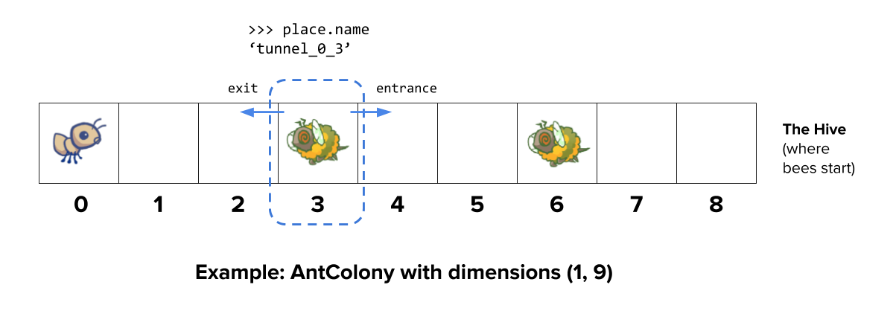
为了帮助你直观理解这些类如何组合在一起，这里 有一张展示所有类及其继承关系的图。
阶段 1：基础玩法
在第一阶段，你将完成实现，使游戏可以使用两种基础 Ant 进行基本对战：HarvesterAnt 和 ThrowerAnt。
问题 0
在你读完 整个 ants.py 文件后，运行以下 ok 命令来回答一组概念性问题：
python3 ok -q 00 -u如果你在回答这些问题时遇到困难，可以再读一遍 ants.py，或者在 Ed 上提问。
关于解锁测试的说明： 如果你在完成解锁测试后想回顾这些解锁问题， 可以前往
tests文件夹（位于ants文件夹内）。 例如，解锁问题 0 之后， 你可以查看tests/00.py中的解锁测试。
问题 1
Part A：目前，放置任何类型的 Ant 都没有花费，因此游戏没有任何挑战性。基类 Ant 的 food_cost 为 0。请根据下表中“食物花费”一列，为 HarvesterAnt 和 ThrowerAnt 重写这个类属性。
| 类 | 食物花费 | 初始生命值 |
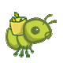 HarvesterAnt |
2 | 1 |
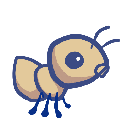 ThrowerAnt |
3 | 1 |
Part B：既然放置 Ant 需要花费食物，我们就需要能够采集更多食物！
要解决这个问题，请实现 HarvesterAnt 类。一个 HarvesterAnt 是一种 Ant，它作为 action 将 gamestate.food 增加 1。
在写任何代码之前，先解锁测试以验证你对问题的理解：
python3 ok -q 01 -u解锁完成后，开始实现你的解答。你可以用以下命令检查正确性：
python3 ok -q 01问题 2
在这个问题中，你将通过添加跟踪入口（entrance）的代码来完成 Place.__init__。目前，一个 Place 只跟踪它的 exit。我们希望 Place 也能跟踪它的 entrance。Place 只需要跟踪一个 entrance。跟踪入口在蚂蚁需要查看隧道前方有哪些 Bee 时会很有用。
不过，简单地把一个入口传给 Place 的构造函数会有问题；我们需要在创建 Place 之前同时拥有 exit 和 entrance！（这是一个 先有鸡还是先有蛋 的问题。）为了绕过这个问题，我们将改用以下方式跟踪入口。Place.__init__ 应使用以下逻辑：
- 新创建的
Place始终将其entrance初始化为None。 - 如果
Place有exit，则将exit的entrance设为该Place。
提示： 记住，当
__init__方法被调用时，第一个参数self被绑定到新创建的对象。
提示： 如果感到困惑，试着在纸上画出两个相邻的
Place。在 GUI 中，一个位置的entrance在它的右侧，而exit在它的左侧。
提示： 记住
Place并不存储在列表中，因此你不能通过索引来访问它们。这意味着你不能像colony[index + 1]这样去访问相邻的位置。你可以怎样从一个位置移动到另一个位置呢？
在写任何代码之前，先解锁测试以验证你对问题的理解：
python3 ok -q 02 -u解锁完成后，开始实现你的解答。你可以用以下命令检查正确性：
python3 ok -q 02问题 3
为了让 ThrowerAnt 能投掷树叶，它必须知道要击中哪只 Bee。
ThrowerAnt 类中提供的 nearest_bee 方法实现只允许 ThrowerAnt 击中同一 Place 中的 Bee。你的任务是修复它，
使 ThrowerAnt 能够 throw_at 它前方尚未仍在 Hive 中 的最近的 Bee。
这包括与 ThrowerAnt 处于同一 Place 的 Bee。
提示： 所有
Place都有一个is_hive属性，当该位置是Hive时设为True，否则为False。
修改 nearest_bee，使其返回一个包含 Bee 的最近 Place 中的随机 Bee。你的实现应遵循以下逻辑：
- 从
ThrowerAnt当前所在的Place开始。 - 如果该
Place包含一只或多只Bee，则返回一个随机的Bee。否则，检查它前方（即当前Place的entrance）的下一个Place。 - 重复此过程，直到找到并返回一只
Bee。如果没有可攻击的Bee，则返回None。 - 确保
nearest_bee永远不会返回位于Hive中的Bee。
提示：
ants.py中提供的random_bee函数会从Bee列表中返回一个随机的Bee，如果列表为空则返回None。
提示： 提醒一下，如果一个
Place中没有Bee，那么该Place实例的bees属性将是一个空列表。
提示： 难以想象测试用例的模样？试着在纸上画出来！游戏布局 中提供的示例图展示了该问题的第一个测试用例。
在写任何代码之前，先解锁测试以验证你对问题的理解：
python3 ok -q 03 -u解锁完成后，开始实现你的解答。你可以用以下命令检查正确性：
python3 ok -q 03运行游戏
实现 nearest_bee 后，ThrowerAnt 应该能够 throw_at 它前方且未在 Hive 中的 Bee。
现在你可以试玩你构建的内容了。要启动图形游戏，运行：
python3 gui.py启动图形版本后，游戏通常可在 http://127.0.0.1:31415/ 访问。
游戏有多个选项，你将在整个项目中用到，可以用 python3 gui.py --help 查看。
usage: gui.py [-h] [-d DIFFICULTY] [-w] [--food FOOD]
Play Ants vs. SomeBees
optional arguments:
-h, --help show this help message and exit
-d DIFFICULTY sets difficulty of game (test/easy/normal/hard/extra-hard)
-w, --water loads a full layout with water
--food FOOD number of food to start with when testing你可以刷新网页来重启游戏，但如果你修改了代码，则需要终止 gui.py 并重新运行。要终止 gui.py，可以在终端按下 Ctrl + C。
你不能同时打开多个相同的 Ants GUI 标签页，否则它们都会报错。
阶段 2：更多蚂蚁！
既然你已经用两种 Ant 实现了基础玩法，让我们为蚂蚁攻击蜜蜂的方式增添一些变化。从这个问题开始，你将实现几种具有不同攻击策略的 Ant。
在这些小节中实现每个 Ant 子类后，你需要将其 implemented 类属性设为 True，这样该类型的蚂蚁才会在 GUI 中出现。欢迎用每种新蚂蚁试玩游戏以测试功能！
对于这些之后的所有蚂蚁，尝试运行 python3 gui.py 来在多隧道布局中与成群的蜜蜂对战，如果你想真正挑战一下，可以尝试 -d hard 或 -d extra-hard。如果蜜蜂太多难以消灭，你可能需要创建一些新蚂蚁。
问题 4
ThrowerAnt 对蜜蜂来说是个强大的威胁，但它的 food_cost 很高。在这个问题中，你将实现 ThrowerAnt 的两个子类，它们的花费更低，但对投掷距离有限制：
LongThrower（远程投掷蚁）只能throw_at在经过至少 5 次entrance转移后才能找到的Bee。换句话说，它无法击中与它位于同一Place或前方前 4 个Place中的Bee。如果有两只Bee，一只离LongThrower太近，另一只在其射程内，LongThrower应当只投掷射程内较远的那只Bee，而不是试图击中较近的那只。ShortThrower（近程投掷蚁）只能throw_at在经过至多 3 次entrance转移后能找到的Bee。换句话说，它无法投掷到前方超过 3 个Place的任何Bee。
这两种特化投掷蚁都不能 throw_at 恰好距离 4 个 Place 的 Bee。
| 类 | 食物花费 | 初始生命值 |
 ShortThrower |
2 | 1 |
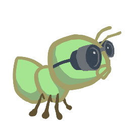 LongThrower |
2 | 1 |
要实现这些新的投掷蚂蚁，你的 ShortThrower 和 LongThrower 类应该继承基类 ThrowerAnt 的 nearest_bee 方法。
接下来，修改 ThrowerAnt 中的 nearest_bee 方法，使其引用 lower_bound 和 upper_bound 属性，并且只有当某个 Place 在给定边界范围内时才返回该 Place 中的 Bee。这是必需的，因为 ShortThrower 和 LongThrower 蚂蚁能 throw_at 的 Place 范围分别受 upper_bound 和 lower_bound 限制。
请确保在 ThrowerAnt 类中为这些 lower_bound 和 upper_bound 属性赋予合适的值，使 ThrowerAnt 的行为保持不变。然后实现子类 LongThrower 和 ShortThrower，并配以适当受限的范围。
你不应在 ThrowerAnt、ShortThrower 和 LongThrower 之间重复任何代码。
重要： 确保你的类属性名为
upper_bound和lower_bound。 测试会直接引用这些属性名，如果你使用其他名字，测试会报错。
提示：
float('inf')返回一个表示为浮点数的正无穷值，可以与其他数字比较。
提示：
lower_bound和upper_bound应标记一个闭区间。
别忘了将 LongThrower 和 ShortThrower 的 implemented 类属性设为 True。
在写任何代码之前，先解锁测试以验证你对问题的理解：
python3 ok -q 04 -u写完代码后，测试你的实现（重新运行 03 的测试以确保它们仍然通过）：
python3 ok -q 03
python3 ok -q 04👩🏽💻👨🏿💻 结对编程？ 记得在驾驶员和导航员角色之间轮换。 驾驶员控制键盘； 导航员观察、提问并提出建议。
问题 5
实现 FireAnt（火焰蚁），它在受到伤害时会进行反击。具体来说，
如果它受到 damage_taken 点生命值的伤害，它会对所在位置的所有 Bee 造成 damage_taken 点伤害（这称为反射伤害）。
如果它死亡，它会对其所在位置的所有 Bee 额外造成由 damage 属性指定的伤害。
FireAnt 类中 damage 属性的默认值是 3。
要实现这一点，请重写 FireAnt 的 reduce_health 方法。
你重写的方法应该调用从父类（Ant）继承而来（而 Ant 又继承自其父类 Insect） 的 reduce_health 方法，来减少当前 FireAnt 实例的 health。
对 FireAnt 实例调用继承的 reduce_health 方法，会按给定的 damage_taken 减少该昆虫的 health，并在其 health 降到零或以下时将其从所在位置移除。
提示： 不要调用
self.reduce_health， 否则你会陷入递归死循环。（你能看出原因吗？）
不过，你的方法还需要包含反射伤害的逻辑：
- 确定反射伤害的数值：
从施加在
FireAnt上的damage_taken开始， 如果该蚂蚁的health已降到 0 或以下，则再加上damage。 - 对于该位置中的每只
Bee，调用其相应的reduce_health方法，用总的反射伤害数值对其造成伤害。
重要： 记住，当任何
Ant失去全部生命值时，它会从所在Place中被移除， 所以请特别注意reduce_health中逻辑的顺序。
| 类 | 食物花费 | 初始生命值 |
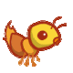 FireAnt |
5 | 3 |
重要：伤害一只蜜蜂可能会导致它被从所在位置移除；当一只昆虫死亡时，它会从当前位置移除。如果你在遍历一个列表的同时改变该列表的内容，你可能无法访问所有元素。 可以通过复制该列表来避免这个问题。 你可以使用列表切片，或使用内置的
list函数，以确保原始列表不受影响。
>>> s = [1,2,3,4]
>>> s[:]
[1, 2, 3, 4]
>>> list(s)
[1, 2, 3, 4]
>>> (s[:] is not s) and (list(s) is not s)
True实现完 FireAnt 后，请给它一个值为 True 的 implemented 类属性。
注意： 即使你重写了父类的
reduce_health函数（Ant.reduce_health）， 你仍然可以在自己的实现中通过调用它来使用这个方法。
在写任何代码之前，先解锁测试以验证你对问题的理解：
python3 ok -q 05 -u解锁完成后，开始实现你的解答。你可以用以下命令检查正确性：
python3 ok -q 05你也可以通过玩一两局游戏来测试你的程序！当一个 FireAnt 被蜇刺时，它应该摧毁所有与它同位置的 Bee。要以 10 份食物开始游戏（便于测试）：
python3 gui.py --food 10问题 6
我们将通过实现 WallAnt（墙蚁）来为我们的荣耀家园基地增加一些防护，这种蚂蚁每个回合什么都不做。WallAnt 很有用，因为它具有很高的 health 值。
| 类 | 食物花费 | 初始生命值 |
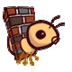 WallAnt |
4 | 4 |
与之前的蚂蚁不同，我们这次没有提供类声明。
请从头实现 WallAnt 类。给它一个名为 name、值为 'Wall' 的类属性（这样图形才能正常工作），以及一个名为 implemented、值为 True 的类属性（这样你才能在游戏中使用它）。
提示： 确保你也实现了
__init__方法， 这样WallAnt才会以适当的health值开始！
在写任何代码之前，先解锁测试以验证你对问题的理解：
python3 ok -q 06 -u解锁完成后，开始实现你的解答。你可以用以下命令检查正确性：
python3 ok -q 06问题 7
实现 HungryAnt（饥饿蚁），它会从其所在 Place 中随机选择一只 Bee，并对该 Bee 造成等于其生命值的伤害，将其整个吞掉。吃掉一只 Bee 后，HungryAnt 必须花 3 个回合咀嚼，之后才能再次进食。在 HungryAnt 咀嚼期间，它无法进食（对 Bee 造成伤害）。如果它所在位置没有可吃的 Bee，HungryAnt 将什么都不做。
我们没有为你提供类头部。
请从头实现 HungryAnt 类。给它一个名为 name、值为 'Hungry' 的类属性（这样图形才能正常工作），以及一个名为 implemented、值为 True 的类属性（这样你才能在游戏中使用它）。
提示： 当一只
Bee被吃掉时，它的health应该减去它自身的health。
| 类 | 食物花费 | 初始生命值 |
 HungryAnt |
4 | 1 |
给 HungryAnt 一个 chew_cooldown 类属性，用于存储 HungryAnt 咀嚼所需的回合数（设为 3）。同时，给每个 HungryAnt 一个 实例属性 cooldown，用于记录它还需要咀嚼多少回合，初始化为 0，因为它一开始什么都没吃。
你也可以把 cooldown 理解为 HungryAnt 能够再次进食前还要经过的回合数。
实现 HungryAnt 的 action 方法：首先，检查它是否正在咀嚼；如果是，则将其 cooldown 减 1。否则，通过将该 Place 中某只随机 Bee 的 health 减到 0 来吃掉它。务必在吃到 Bee 时设置 cooldown！
提示： 除了
action方法外，还要确保实现__init__方法，以定义任何实例变量，并确保HungryAnt以适当的health值开始！
在写任何代码之前，先解锁测试以验证你对问题的理解：
python3 ok -q 07 -u解锁完成后，开始实现你的解答。你可以用以下命令检查正确性：
python3 ok -q 07👩🏽💻👨🏿💻 结对编程？ 现在是一个切换角色的好时机。 切换角色可以确保你们双方都能从担任不同角色的学习体验中受益。
问题 8
目前，我们的蚂蚁相当脆弱。我们希望找到一种方法帮助它们在与蜜蜂的猛攻中坚持更久。这就轮到 ProtectorAnt（守护蚁）了。
| 类 | 食物花费 | 初始生命值 |
 ProtectorAnt |
4 | 2 |
为了更轻松地实现 ProtectorAnt，我们将这个问题拆分为 3 个子部分。
在每个部分中，我们会在 ContainerAnt 类、Ant 类或 ProtectorAnt 类中进行修改。
注意： 我们将问题 8 分成了三个不同的子部分。我们建议为每个子部分先通过解锁测试，再为其编写任何代码。 每个子部分都会进行测试，每个子部分计 1 分，整个问题共计 3 分。
问题 8a
首先，我们将定义并在 ContainerAnt 父类（稍后用于 ProtectorAnt）中工作。
ProtectorAnt 与普通的蚂蚁不同，它是一个 ContainerAnt（容器蚁）；它可以容纳另一只蚂蚁并保护它，且都位于同一个 Place 中。当一只 Bee 蜇刺了一个位置中的蚂蚁，而该位置中有一只蚂蚁容纳了另一只蚂蚁时，只有容器受到伤害。容器内的蚂蚁仍然可以执行它原本的动作。
如果容器死亡，被容纳的蚂蚁仍会留在原位置（并且随后可能受到伤害）。
每个 ContainerAnt 都有一个实例属性 ant_contained，用于存储它容纳的蚂蚁。这只 ant_contained 最初为 None，表示尚未存储任何蚂蚁。实现 store_ant 方法，使其将 ContainerAnt 的 ant_contained 实例属性设为传入的 ant 参数。然后实现 ContainerAnt 的 action 方法。这个方法会确保如果我们的 ContainerAnt 当前容纳了一只蚂蚁，就执行 ant_contained 的动作。
此外，为了确保一个容器及其容纳的蚂蚁可以同时占据一个 Place（每个 Place 最多两只蚂蚁），但前提是恰好其中一个是容器，我们可以创建一个 can_contain 方法。
已经有一个 Ant.can_contain 方法，但它始终返回 False。
在 ContainerAnt 中重写 can_contain 方法，使其接收一个蚂蚁 other 作为参数，并在以下情况返回 True：
- 这个
ContainerAnt尚未容纳另一只蚂蚁。 - 另一只蚂蚁不是容器。
提示： 你可能会发现每个
Ant都有的is_container属性很有用， 可用于检查某个Ant是否为容器。
在写任何代码之前，先解锁测试以验证你对问题的理解：
python3 ok -q 08a -u解锁完成后，开始实现你的解答。你可以用以下命令检查正确性：
python3 ok -q 08a问题 8b
接下来，我们将在 Ant 类中工作。
修改 Ant.add_to，以允许一个容器及其容纳的蚂蚁根据以下规则占据同一位置：
- 如果原本占据一个位置的
Antcan_contain被添加的Ant，那么两只Ant都占据该位置，且原本的Ant容纳被添加的Ant。 - 如果被添加的
Antcan_contain原本在该位置中的Ant，那么两只Ant都占据该位置，且被添加的Ant容纳原本的Ant。 - 如果两只
Ant都不能can_contain对方，则像之前一样抛出相同的AssertionError（起始代码中已有的那个）。
重要： 如果某个特定
Place中有两只Ant， 该Place实例的ant属性应该指向容器蚂蚁， 并且容器蚂蚁应该容纳非容器蚂蚁。
提示： 你也应该利用你写的
can_contain方法，避免重复代码。
注意： 如果你通过 VSCode Pylance 扩展收到关于
Ant.add_to的“unreachable code（无法到达的代码）”警告， 可以忽略这个特定的警告， 因为该代码实际上会被运行 （在这种情况下该警告是不准确的）。
在写任何代码之前，先解锁测试以验证你对问题的理解：
python3 ok -q 08b -u解锁完成后，开始实现你的解答。你可以用以下命令检查正确性：
python3 ok -q 08b问题 8c
最后，我们可以着手实现我们的 ProtectorAnt 类。
添加 ProtectorAnt.__init__，为 ProtectorAnt 设置初始生命值。
我们不需要在这里创建 action 方法，因为 ProtectorAnt 类从 ContainerAnt 类继承了它。
另请注意，ProtectorAnt 不会造成任何伤害。
实现完 ProtectorAnt 后，
请给它一个值为 True 的 implemented 类属性。
在写任何代码之前，先解锁测试以验证你对问题的理解：
python3 ok -q 08c -u解锁完成后，开始实现你的解答。你可以用以下命令检查正确性：
python3 ok -q 08c问题 9
ProtectorAnt 提供了很好的防御，但俗话说最好的防御就是进攻。TankAnt（坦克蚁）是一种 ContainerAnt，它保护所在位置中的一只蚂蚁，并且每个回合对所在位置的所有 Bee 造成 1 点伤害。和任何 ContainerAnt 一样，TankAnt 允许它所容纳的蚂蚁每个回合执行其动作。
| 类 | 食物花费 | 初始生命值 |
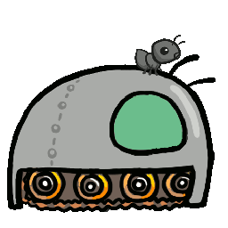 TankAnt |
6 | 2 |
我们没有为你提供类头部。
请从头实现 TankAnt 类。给它一个名为 name、值为 'Tank' 的类属性（这样图形才能正常工作），以及一个名为 implemented、值为 True 的类属性（这样你才能在游戏中使用它）。
你不需要修改 TankAnt 类之外的任何代码。如果你发现需要在别处做改动，请寻找一种方式来编写上一个问题的代码，使其不仅适用于 ProtectorAnt 和 TankAnt 对象，也适用于一般的 ContainerAnt。
提示： 你只需要从
TankAnt的父类中重写__init__和action方法。
提示： 与
FireAnt类似，伤害一只蜜蜂可能会导致它被从所在位置移除。
在写任何代码之前，先解锁测试以验证你对问题的理解：
python3 ok -q 09 -u解锁完成后，开始实现你的解答。你可以用以下命令检查正确性：
python3 ok -q 09检查点提交
检查以确保你已完成阶段 1 和阶段 2 中的所有问题：
python3 ok --score然后，在检查点截止日期前，将 ants.py 提交到 Gradescope 上的 Ants 检查点 作业。关于如何提交到 Gradescope 的复习，请参考 Lab 00。
你可以通过点击 Edit Group 并输入其电子邮件地址，在 Gradescope 提交中添加一位伙伴。只需一位伙伴提交到 Gradescope 即可。
当你运行 ok 命令时，你仍会看到一些测试被锁定，因为你尚未完成整个项目。如果你完成了到目前为止的所有问题，就能获得检查点的满分。
恭喜！你已完成本项目的阶段 1 和阶段 2！
阶段 3：水与力量
在最后一个阶段，你将通过引入一种新的位置类型以及能够占据该位置的新蚂蚁，为游戏再添一把火。其中一种蚂蚁是整个蚁群中最重要的：蚁后！
问题 10
让我们给蚁群加点水！目前只有两种位置，Hive 和基础的 Place。为了让游戏更有趣，我们将创建一种名为 Water 的新类型 Place。
只有防水的 Insect 才能被放置在 Water 中。为了确定一只 Insect 是否防水，请在 Insect 类中添加一个新的类属性 is_waterproof，并将其设为 False。由于 Bee 会飞，它们的 is_waterproof 属性为 True，覆盖了继承的值。
现在，为 Water 实现 add_insect 方法。首先，无论该 Insect 是否防水，都将其添加到 Place 中。然后，如果该 Insect 不防水，则将其 health 减到 0。不要重复程序中其他地方的代码。相反，请使用已经定义好的方法。
在写任何代码之前，先解锁测试以验证你对问题的理解：
python3 ok -q 10 -u解锁完成后，开始实现你的解答。你可以用以下命令检查正确性：
python3 ok -q 10完成这个问题后，玩一局包含水的游戏。要访问包含水的 wet_layout，请在启动游戏时添加 --water 选项（或简写为 -w）。
python3 gui.py --water👩🏽💻👨🏿💻 结对编程？ 记得在驾驶员和导航员角色之间轮换。 驾驶员控制键盘； 导航员观察、提问并提出建议。
问题 11
目前还没有可以放置在 Water 上的蚂蚁。请实现 ScubaThrower（潜水投掷蚁），它是 ThrowerAnt 的子类，花费更高且防水，除此之外与其基类完全相同。ScubaThrower 在被放置在 Water 中时不应损失生命值。
| 类 | 食物花费 | 初始生命值 |
 ScubaThrower |
6 | 1 |
我们没有为你提供类头部。请从头实现 ScubaThrower 类。给它一个名为 name、值为 'Scuba' 的类属性（这样图形才能正常工作），并记得将其 implemented 类属性设为 True（这样你才能在游戏中使用它）。
在写任何代码之前，先解锁测试以验证你对问题的理解：
python3 ok -q 11 -u解锁完成后，开始实现你的解答。你可以用以下命令检查正确性：
python3 ok -q 11问题 12
最后，实现 QueenAnt（蚁后）。蚁后是一种 ThrowerAnt，她以勇气激励同伴蚂蚁。除了标准的 ThrowerAnt 动作外，QueenAnt 每次执行动作时，都会将隧道中位于她身后所有蚂蚁的伤害翻倍。但是，一旦某只蚂蚁的伤害被翻倍过，就不能再次翻倍。试着想一种方法来记录某只蚂蚁的伤害是否已经被翻倍（提示：使用一个实例属性！）
注意：
FireAnt的反射伤害不应被翻倍，只有在其生命值降到 0 时造成的额外伤害才应被翻倍。
| 类 | 食物花费 | 初始生命值 |
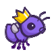 QueenAnt |
7 | 1 |
然而，能力越大，责任越大。如果 QueenAnt 的生命值降到 0，蚂蚁就输了。你需要在 QueenAnt 中重写 Insect.reduce_health，并在这种情况下调用 ants_lose()，以向模拟器发出游戏结束的信号。（如果任何蜜蜂到达隧道尽头，蚂蚁同样会输。）
提示： 要为它身后所有蚂蚁的伤害翻倍，你可以填写
Ant类中定义的double方法，然后从QueenAnt类中调用它。
提示： 在给蚂蚁的伤害翻倍时， 请记住一个
Place中可能有不止一只蚂蚁， 例如容器蚂蚁容纳另一只蚂蚁的情况。
提示： 记住
QueenAnt的reduce_health方法在父类的reduce_health方法基础上增加了调用ants_lose()的任务。 我们怎样才能确保仍然执行父类中方法的所有内容，同时不重复代码？
提示： 你可以从女王蚂蚁的
place.exit开始，然后不断移动到上一个Place的exit，以此找到隧道中位于QueenAnt身后的每个Place。 隧道尽头的Place的exit为None。
在写任何代码之前，先解锁测试以验证你对问题的理解：
python3 ok -q 12 -u解锁完成后，开始实现你的解答。你可以用以下命令检查正确性：
python3 ok -q 12项目提交
对所有问题运行 ok，确保所有测试都已解锁并通过：
python3 ok你也可以查看项目每个部分的得分：
python3 ok --score一旦你满意了，就将 ants.py 上传到 Gradescope 上的 Ants 作业来完成提交。关于如何提交到 Gradescope 的复习，请参考 Lab 00。
你可以通过点击 Edit Group 并输入其电子邮件地址，在 Gradescope 提交中添加一位伙伴。只需一位伙伴提交到 Gradescope 即可。
你现在已经完成这个项目了！ 如果你还没试过，应该玩一局游戏！
python3 gui.py [-h] [-d DIFFICULTY] [-w] [--food FOOD]- -h = 帮助
- -d = 难度（easy/normal/hard/extra-hard）
- -w = 水
- -food = 起始食物数量（默认为 2）
额外挑战（可选）
注意： 这些问题是可选的，不计任何分数。
在答疑时间和项目派对上，工作人员会优先帮助完成必做问题的学生。除非 排队系统 为空，否则我们不会提供这个问题的帮助。
实现最后两种投掷蚂蚁，它们造成 0 点伤害，而是对它们 throw_at 的 Bee 实例的 action 方法施加一个临时效果。这个“状态”会持续若干回合，之后不再生效。
问题 EC 1（0 分）
我们将实现一种新蚂蚁 SlowThrower（减速投掷蚁），它继承自 ThrowerAnt。
SlowThrower 向蜜蜂投掷黏黏的糖浆，使其减速 5 个回合。当一只蜜蜂被减速时，若 gamestate.time 为偶数，它会执行正常的蜜蜂动作；否则不执行任何动作（不移动也不蜇刺）。如果一只蜜蜂在被减速期间再次被糖浆击中，它将在最近一次被糖浆击中的时刻起减速 5 个回合。也就是说，如果一只蜜蜂被糖浆击中，经过 2 个回合后再次被糖浆击中，那么它将在第二次被击中后减速 5 个回合。因此它总共被减速 7 个回合（而不是 10 个！）
| 类 | 食物花费 | 初始生命值 |
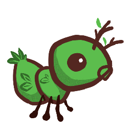 SlowThrower |
6 | 1 |
为了完成 SlowThrower 的实现，你需要适当地设置其类属性，并实现 SlowThrower 中的 throw_at 方法。
重要限制： 本题中你不得修改 SlowThrower 类之外的任何代码。这意味着你不得直接修改 Bee.action 方法。我们的测试会对此进行检查。
提示：看一下
SlowThrower的父类ThrowerAnt。ThrowerAnt的action方法调用了throw_at，这正是你应该在SlowThrower中重写的。传入SlowThrower的throw_at函数的target参数是什么，为什么？target.action指的是什么？
实现提示：将
target.action赋值为一个新函数，该函数有条件地调用Bee.action。你可以创建并使用一个实例属性来记录蜜蜂还会被减速多少个回合。一旦减速效果结束，Bee.action应该每个回合都再次被调用。
在写任何代码之前，先解锁测试以验证你对问题的理解：
python3 ok -q EC1 -u你可以运行一些提供的测试，但它们并不全面：
python3 ok -q EC1一定要测试你的代码！你的代码应该能够对一个目标施加多个状态；每个新状态都会作用于蜜蜂当前（可能之前已经受影响过的）action 方法。
问题 EC 2（0 分）
你必须正确实现问题 EC 1（SlowThrower）才能通过本问题的测试。我们将实现一种新蚂蚁
ScaryThrower（恐吓投掷蚁），它继承自ThrowerAnt。
ScaryThrower 会恐吓附近的蜜蜂，使其后退而不是前进。以下是一些需要牢记的规则：
- 如果蜜蜂已经紧邻蜂巢且无法再后退，它就不应该移动。要检查一只蜜蜂是否紧邻蜂巢，你可能会发现
Place的is_hive实例属性很有用。 - 蜜蜂会保持受惊状态，直到它们尝试后退两次。因此，后退效果持续两个回合。
- 如果蜜蜂被减速且
gamestate.time为奇数，它们就不能尝试后退。这会是一个被 SlowThrower 冻结的回合！ - 一旦一只蜜蜂被吓过一次，它就再也不会被吓到了。
| 类 | 食物花费 | 初始生命值 |
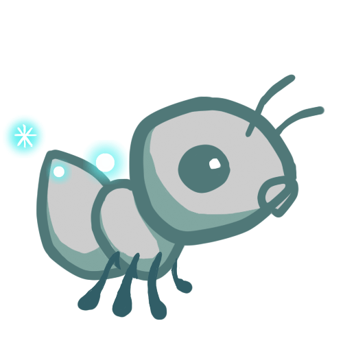 ScaryThrower |
6 | 1 |
为了完成 ScaryThrower 的实现，你需要适当地设置其类属性，并实现 Bee 中的 scare 方法，该方法会对特定的蜜蜂施加受惊状态。你可能还需要修改 Bee 的其他一些方法，例如 action。
在写任何代码之前，先解锁测试以验证你对问题的理解：
python3 ok -q EC2 -upython3 ok -q EC2一定要测试你的代码！你的代码应该能够对一个目标施加多个状态；每个新状态都会作用于蜜蜂当前（可能之前已经受影响过的）action 方法。
问题 EC 3（0 分）
实现 NinjaAnt（忍者蚁），它会伤害所有经过的 Bee，但永远不会被蜇刺。
| 类 | 食物花费 | 初始生命值 |
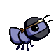 NinjaAnt |
5 | 1 |
NinjaAnt 不会阻挡飞过的 Bee 的路径。要实现这一行为，首先修改 Ant 类，添加一个新的类属性 blocks_path，设其值为 True，然后在 NinjaAnt 类中将 blocks_path 的值重写为 False。
其次，修改 Bee 的 blocked 方法，使其在以下任一情况下返回 False：Bee 的 place 中没有 Ant，或者虽然有 Ant，但其 blocks_path 属性为 False。这样 Bee 就会径直飞过 NinjaAnt。
最后，我们希望让 NinjaAnt 伤害所有飞过的 Bee。在 NinjaAnt 中实现 action 方法，将其同 place 中所有 Bee 的生命值按其 damage 属性减少。与 FireAnt 类似，你必须遍历一个可能发生变化的蜜蜂列表。
提示：难以想象测试用例的模样？试着在纸上画出来！参见 游戏布局 中的示例以获取帮助。
在写任何代码之前，先解锁测试以验证你对问题的理解：
python3 ok -q EC3 -upython3 ok -q EC3作为挑战，试着只用 HarvesterAnt 和 NinjaAnt 来赢得一局游戏。
问题 EC 4（0 分）
我们秘密开发这只蚂蚁已经很久了。它太过危险，以至于我们不得不把它锁在超级隐蔽的地下金库中，但我们终于认为它可以在战场上测试了。在这个问题中，你将实现最后一只蚂蚁——LaserAnt（激光蚁），一只带有转折的 ThrowerAnt。
| 类 | 食物花费 | 初始生命值 |
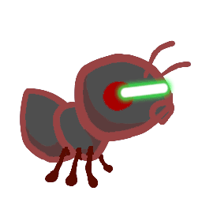 LaserAnt |
10 | 1 |
LaserAnt 会发射强大的激光，伤害所有敢于挡在它路径上的目标。所有类型的 Bee 和 Ant 都有被 LaserAnt 伤害的风险。当 LaserAnt 执行动作时，它会对它所在位置的所有 Insect（不包括它自己，但包括其容器（如果有））以及它前方的 Place（不包括 Hive）造成伤害。
如果只是这样，LaserAnt 就太强大了，我们无法控制。LaserAnt 的基础伤害为 2。但是，LaserAnt 的激光有一些怪癖。激光每远离 LaserAnt 所在位置一格，威力就减弱 0.25。此外，LaserAnt 的电池有限。每次 LaserAnt 实际伤害一只 Insect，其激光的总伤害就降低 0.0625（1/16）。这种降低是立即生效的，所以如果在 LaserAnt 前方同一格有两只 Bee，它对第二只 Bee 造成的伤害会更小。如果由于这些限制，LaserAnt 的伤害变成了负数，它就只造成 0 点伤害。
在一个回合中被伤害的各项之间的确切顺序无关紧要。
为了完成这只终极蚂蚁的实现，请通读 LaserAnt 类，适当地设置类属性，并实现以下两个函数：
insects_in_front是一个实例方法，由action方法调用，它返回一个字典，其中每个键是一个Insect，每个对应的值是该Insect距离LaserAnt的位置数（格数）。该字典应包含与LaserAnt同位置或在其前方的所有Insect，不包括LaserAnt自身。calculate_damage是一个实例方法，接收一个distance参数，即某只昆虫距离LaserAnt实例的格数。它根据以下因素返回该LaserAnt实例应造成的伤害：- 某只
Insect距离LaserAnt实例的distance。 - 该
LaserAnt已经伤害过的Insect数量，存储在insects_shot实例属性中。
- 某只
除了实现上述方法外，你可能还需要根据需要在 LaserAnt 类中修改、添加或使用类属性或实例属性。
重要：如果一只昆虫的生命值未受影响，它的生命值应保持为整数（whole number），就像昆虫最初被创建时那样。
注意：这个问题没有解锁测试。
python3 ok -q EC4致谢： Tom Magrino 和 Eric Tzeng 与 John DeNero 共同开发了本项目。还有许多人也为该项目做出了贡献！
美术作品由 Alana Tran、Andrew Huang、Emilee Chen、Jessie Salas、Jingyi Li、Katherine Xu、Meena Vempaty、Michelle Chang 和 Ryan Davis 绘制。